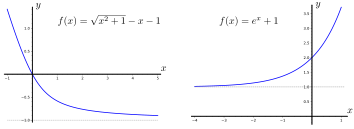

A definição de um limite no infinito tem uma certa semelhança com a definição de limites em um número real que vimos anteriormente, mas os detalhes são um pouco diferentes. Aqui vamos discutir sobre a distinção entre infinito positivo e negativo. À medida que \(x\) se torna muito grande e positivo, ele se move em direção a \(+\infty\text{,}\) mas quando se torna muito grande e negativo, ele se move em direção a \(-\infty\) .
Definição2.4.1.Limites no infinito — informal.
Escrevemos
\begin{align*}
\lim_{x \to \infty} f(x) \amp= L
\end{align*}
quando o valor da função \(f(x)\) se aproxima cada vez mais de \(L\) à medida que tornamos \(x\) cada vez maior e positivo.
Analogamente, escrevemos
\begin{align*}
\lim_{x \to -\infty} f(x) \amp= L
\end{align*}
quando o valor da função \(f(x)\) se aproxima cada vez mais de \(L\) à medida que tornamos \(x\) cada vez maior e negativo.
Limites para \(+\infty\) e \(-\infty\).
Considere os gráficos de duas funções a seguir:

As linhas horizontais pontilhadas indicam o comportamento quando \(x\) se torna muito grande. A função à esquerda tem limite quando \(x \to \infty\) e quando \(x \to -\infty\) desde que a função “se estabeleça” para um determinado valor. Por outro lado, a função à direita não tem um limite quando \(x \to -\infty\) já que a função fica cada vez maior.
Da mesma forma quando apresentamos limites com \(x\to a\text{,}\) vamos iniciar nosso estudo de limites infinitos apresentando alguns resultados bem simples.
Teorema2.4.2.
Seja \(c\) uma constante então os seguintes limites são verdadeiros
\begin{align*}
\lim_{x \to \infty} c \amp= c \amp \lim_{x \to -\infty} c \amp= c\\
\lim_{x \to \infty} \frac{1}{x} \amp= 0 \amp \lim_{x \to -\infty} \frac{1}{x} \amp= 0
\end{align*}
Novamente, esses limites interagem bem com a aritmética:
Teorema2.4.3.Aritmética dos limites infinitos.
Sejam \(f(x), g(x)\) ser duas funções para as quais os limites
Observe que Teorema 2.4.4 toma cuidado em evitar raízes quadradas de números negativos ou mesmo qualquer raiz par de um número negativo. Por isso precisamos que \(x^r\) seja definida para todo \(x\text{,}\) quando precisamos fazer \(x\to -\infty\text{.}\) Por exemplo,
\(\displaystyle \lim_{x \to \infty} \frac{1}{x^{1/2}} = 0\text{,}\) mas \(\displaystyle \lim_{x \to -\infty} \frac{1}{x^{1/2}}\) não existe, pois \(x^{1/2}\) não está definida para \(x \lt 0\text{.}\)
Por outro lado, \(x^{4/3}\) está definida para valores negativos de \(x\) e \(\displaystyle \lim_{x \to -\infty} \frac{1}{x^{4/3}} = 0\text{.}\)
Nossa primeira aplicação de limites no infinito será examinar o comportamento de uma função racional para \(x\) muito grande.
À medida que \(x\) se torna muito grande, é o termo \(x^2\) que dominará tanto no numerador quanto no denominador e os outros termos se tornam irrelevantes. Ou seja, para \(x\) muito grande, \(x^2\) é muito maior que \(x\) ou qualquer constante. Então, retiramos essas partes dominantes colocando esses termos em evidência:
Vamos iniciar identificando o termo dominante no numerador e denominador e então colocá-lo em evidência. Veja que o denominador é dominado por \(5x\text{.}\) A maior contribuição para o numerador vem do termo \(4x^2\) dentro da raiz quadrada. Quando extraímos \(x^2\) para fora da raiz quadrada, ele se torna \(x\text{,}\) então o numerador é dominado por \(x \cdot \sqrt{4} = 2x\text{.}\) Para mostrar isso mais explicitamente, reescrevemos o numerador
Agora vamos pensar também no limite da mesma função do Exemplo 2.4.8, mas agora com \(x \rightarrow -\infty\text{.}\) Há algo sutil acontecendo por causa da raiz quadrada. Primeiro considere a função 1
Teremos a mesma coisa para qualquer \(t \geq 0\text{.}\) Para qualquer \(t \ge 0\text{,}\)\(h(t)=\sqrt{t^2}\) retorna exatamente \(t\text{.}\) No entanto, agora considere a função em \(t=-3\)
ou seja, a função está retornando \(-1\) vezes o valor de entrada da função \(h\) .
Isso ocorre porque quando definimos \(\sqrt{\text{ }}\text{,}\) definimos como a raiz quadrada positiva, ou seja, a função \(\sqrt{t}\) nunca pode retornar um número negativo. Assim, sendo mais cuidadoso
\begin{align*}
h(t) \amp= \sqrt{t^2} = | t |
\end{align*}
Onde o \(|t|\) é o valor absoluto de \(t\text{.}\) Você talvez esteja acostumado a pensar em valor absoluto como “remover o sinal de menos”, mas isso não é muito correto. A Figura 2.4.9 apresenta o gráfico de uma função por partes definida por
\begin{align*}
|x| \amp= \begin{cases} x \amp x \geq 0 \\ -x \amp x \lt 0 \end{cases}
\end{align*}
Portanto nossa função \(h(t)\) é de fato
\begin{align*}
h(t) \amp= \sqrt{t^2} =
\begin{cases}
t \amp t \geq 0 \\
-t \amp t \lt 0
\end{cases}
\end{align*}
Novamente vamos tentar descobrir qual é o maior termo no numerador e no denominador e evidenciá-lo. Como estamos tomando o limite como \(x \to -\infty\text{,}\) devemos pensar em \(x\) como um grande número negativo. O denominador é dominado por \(5x\text{.}\) A maior contribuição para o numerador vem do \(4x^2\) dentro da raiz quadrada. Quando movemos o \(x^2\) para fora de uma raiz quadrada, ele se torna \(|x| = -x\) (já que estamos tomando o limite como \(x \to -\infty\)), então o numerador é dominado por \(-x\cdot\sqrt{4} = - 2x\text{.}\) Assim, o numerador fica
\begin{align*}
\sqrt{4x^2+1} \amp= \sqrt{x^2 (4+1/x^2)} = \sqrt{x^2} \sqrt{4+1/x^2}\\
\amp= |x|\sqrt{4+1/x^2} \qquad \ct{ e já que $x \lt 0$ temos}\\
\amp = -x\sqrt{4+1/x^2}
\end{align*}
Portanto, o limite como \(x \to -\infty\) é quase o mesmo, mas ganhamos um sinal de menos. Este definitivamente não é o caso em geral — você tem que pensar em cada exemplo separadamente.
pois o limite não existe. Só podemos usar as regras de limite quando os limites existem. Ao invés disso, devemos fazer uma análise cuidadosa dos termos envolvidos.
Note que quando \(x\) for muito grande, \(x^{7/5} = x\cdot x^{2/5}\) será muito maior que \(x\text{,}\) então o termo \(x^{7/5}\) dominará o termo \(x\text{.}\) Então fatore \(x^{7/5}\) e reescreva como
Considere o que acontece com cada um dos fatores com \(x \to \infty\text{:}\)
Para \(x\) grande, \(x^{7/5} \gt x\) (isso é verdade para qualquer \(x \gt 1\)). No limite com \(x \to +\infty\text{,}\)\(x\) se torna arbitrariamente grande e positivo, e \(x^{7/5}\) deve ser maior ainda assim, segue que
Mas lembre-se que \(+\infty\) e \(-\infty\) não são números; a última equação no Exemplo 2.4.13 é uma abreviação (atalho) para não escrever “a função se torna arbitrariamente grande”.
Na seção anterior vimos que limites finitos e aritmética interagem funcionam bem. Isso nos permitiu calcular os limites de funções mais complicadas em termos de funções mais simples. Quando os limites das funções vão para mais ou menos infinito, ficamos um pouco mais restritos no que podemos deduzir. O próximo teorema apresenta alguns resultados referentes à soma, diferença, razão e produto de limites infinitos — infelizmente em muitos casos não podemos fazer afirmações gerais e os resultados dependerão dos detalhes do problema em questão.
Teorema2.4.14.Aritmética de limites infinitos.
Sejam \(a,c,H \) constantes e \(f,g,h\) funções definidas em um intervalo que contém \(a\) (mas não precisam ser definidas em \(x=a\)), de modo que
Observe que por “indeterminado” queremos dizer que o limite pode ou não existir, mas não pode ser determinado a partir das informações fornecidas no teorema. Considere o exemplo a seguir.
Exemplo2.4.15.Atenção com a aritmética de limites infinitos.
O Teorema 2.4.14 não pode nos ajudar a calcular essas diferenças, porque a diferença de dois limites infinitos pode ser mais infinito, menos infinito ou algum número finito, dependendo dos detalhes do problema. Para se convencer veja os casos a seguir:
Com \(x\to +\infty\) ambos os termos, \(\sqrt{x^2+1}\) e \(x\text{,}\) se tornam arbitrariamente grandes. Logo, é difícil afirmar o que acontece com a diferença; nesta caso, vamos fazer algumas manipulações algébricas para reescrever a função. Iniciamos multiplicando o numerador e o denominador pelo conjugado radical: